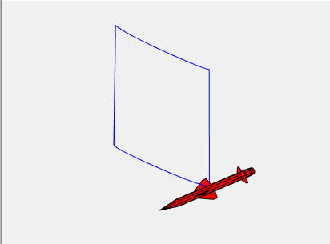
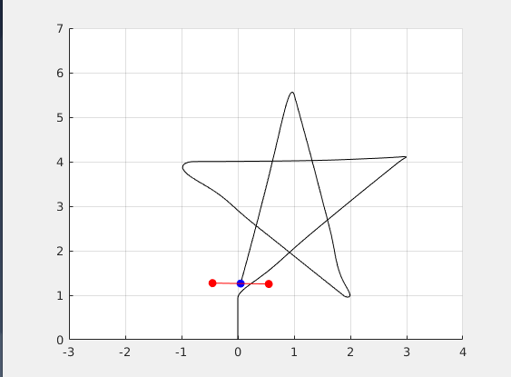

3-Dof Quadcoptor Simulation and Control
Current Model
3 degree of freedom: y,z, and roll.
2 control inputs: u1 for thrust, u2 for torque on y-z plane. (control limits: u1 <= 30 Newton; roll angle < 30 degree)
Equations
| z_dd = g - (u1/m)*cos(roll)
| y_dd = (u1/m)*sin(roll)
| roll_dd = u2/Ixx
Current Control
User can set the Z (altitude) and Y (horizontal) waypoints. The demo uses a set of pulse generator as Z-Y input, so that the drone can fly in a 1x1 meter square.
Altitdue control: PD control + Mass Feedforward
Horizontal control: cascaded PID loop; outer Y PID controller generates the refernce roll angle input for inner roll PID loop.
Takeoff flag: now I use clock + Takeoff time to set the takeoff flag.
See the results of 1. without Mass Feedforward and 2. with Mass Feedforward.


Command Matrix and Animation
Now, we can control the drone by setting waypoints in WayPts matrix(in the form of [y,z,t]). The signal.m script will calculate the corresponding input signal of Y(t), Z(t) position (use the concept of superposition to combine the nonlinear signals automatically.)
Then run the simulink model: nonlinear_airplane (it will generate tout,yout,zout,rollout datas in the out structure).
Then run the animation.m script to see the animation. (logdataprocess.m script will run first to collect the y_plot,z_plot,roll_plot points for animation)
Look! We can draw a star now!


MATLAB Project Download Link
You can download the full project by:
3dofQuadcopter_download.zip